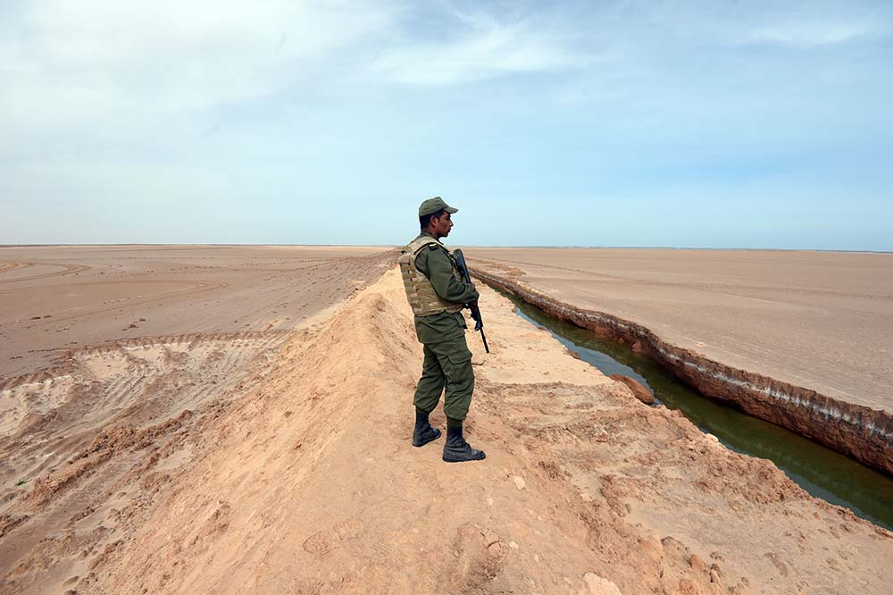
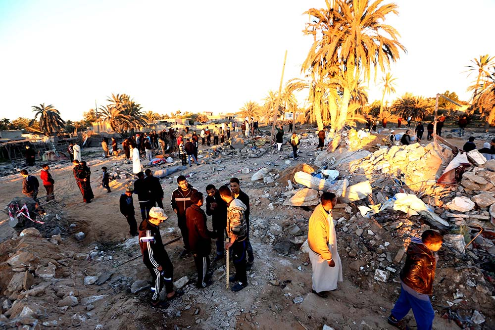

Libya has gradually emerged as an alternative destination for Tunisian jihadi-salafists. Arms are abundant and militant groups operate with impunity. From their base in Libya, Tunisian fighters have trained, planned, and launched a series of deadly attacks on Tunisian soil since 2015. Whereas Libya was once seen as a way station for fighters to train and secure transportation to Syria, changing conditions have made Tunisia’s neighbor a more accessible and attractive final destination for jihadi-salafi recruits. Tunisian fighters’ numbers in Libya are difficult to track, but Tunisians are believed to comprise a majority of the several thousand foreign fighters who have joined the Islamic State group (ISG) in Libya, and residents of the ISG stronghold of Sirte reported to Human Rights Watch investigators in early 2016 that Tunisians are the largest group of foreign fighters in that city. A number of factors have contributed to Libya’s growing draw on Tunisian jihadists.
First, Libya’s close proximity to Tunisia, ease of entry, and sizable Tunisian labor population all make reaching Libya more feasible than traveling to Syria. Traffic flows across two open-land border crossings making entering Libya relatively straightforward. Family ties across the borders also play a role, as does a long tradition of labor exchange and official and unofficial trade between the two countries. Libya has been Tunisia’s second-largest trading partner after the European Union. Although deteriorating security in Libya has compelled many Tunisian expatriates to return home, as of late 2015 approximately 40,000 Tunisians continue to live and work in Libya, according to Tunisian government sources. Meanwhile, tighter air travel restrictions since early 2013 on young people flying to places like Turkey (the main entry point to Syria for foreign fighters) have made reaching Syria more difficult, thereby boosting the importance of Libya as an alternative destination.
Libya’s close proximity to Tunisia, ease of entry, and sizable Tunisian labor population all make reaching Libya more feasible than traveling to Syria.
Second, many Tunisian jihadi-salafists relocated to Libya as Tunisian authorities began to crack down more forcefully on jihadi-salafi activism in 2013 and 2014. Libya provided a haven for key elements of Ansar al Shari`a’s leadership, who regrouped there after the Tunisian government banned the movement in August 2013. From Libya, Ansar al Shari`a and other jihadi-salafists established contacts with local jihadi-salafi groups. They went on to develop a logistics structure connecting Tunisian fighters to Libya upon which the Islamic State group and other armed groups would later build.
Third, intensified military offensives against the Islamic State group in Syria and Iraq since 2015 have forced some foreign jihadists, including Tunisians, to relocate to Libya. Numerous reports suggest that the Islamic State group diverted some resources and personnel to Libya after Russia launched airstrikes in late September 2015 and in the wake of intensified U.S.-led operations against ISG commanders following the November 2015 Paris attacks. Libya is the Islamic State group’s most important hub in Africa, and the group’s propaganda extols Libya’s “strategic importance and immense potential,” citing its central location, oil wealth, abundant arms supply, and power vacuums.
Some question the viability of the Islamic State group’s base in Libya. Increasing international calls to confront the Islamic State group and escalating offensives against it by various Libyan factions in June 2016 create uncertainty about the organization’s ability to hold and expand territory in Libya. However, the limits of the Libyan branch’s growth potential and resilience are still being tested. Even in the face of military setbacks for the Islamic State group, as long as armed groups find refuge in Libya and fill the political and security vacuum, the country will threaten Tunisia’s security.
Fourth, the Islamic State group is actively reaching out to young Tunisians through propaganda and social media to urge them to join the group’s Libyan branch. Tunisian ISG members often feature in propaganda videos and online recruitment efforts courting their countrymen: in April 2015, the group’s Tripoli branch issued a recruitment video in which a Tunisian fighter called on other Tunisians to take up arms with the Islamic State group in Libya, and another Tunisian ISG member was featured in a Tunisia-focused recruitment video released following the March 2016 ISG attack on Ben Guerdane. In many of these appeals, waging jihad in Libya is sold to Tunisian recruits as the first step in bringing the fight home to Tunisia.
The Islamic State group is actively reaching out to young Tunisians through propaganda and social media to urge them to join the group’s Libyan branch.
In Libya, Tunisians’ numbers give them an outsized presence among the Islamic State group’s ranks. Tunisian officials and UN investigators claim that Tunisian citizens are assuming more military command roles within the Islamic State group and operating training camps for jihadists in Libya.
Tunisian suicide bombers have also contributed to the Islamic State group’s military operations in Libya. Tunisian government officials say that their countrymen executed over a dozen suicide attacks in Libya in 2014, and Tunisians have remained important to the Islamic State group’s suicide operations as the group has increasingly targeted Libyan infrastructure. A Tunisian was among two attackers who bombed the Corinthia Hotel in Tripoli in January 2015, killing 10, and another was among four attackers who bombed Tripoli’s Mitiga airport in September 2015 in one of the Islamic State group’s most ambitious operations in Libya up to that point.
Tunisian fighters active in Libya have launched several major attacks within Tunisia. Tunisian authorities traced the Bardo Museum attack in March 2015, and the Sousse resort attack that July, to Tunisians trained in Libya. They also claimed that the explosives used by a Tunisian bomber to kill members of the presidential guard in Tunis in November 2015 came from Libya.
The role of Tunisians in the Islamic State group in Libya and the violent spillover this generates for Tunisia are highlighted by Tunisians’ connections to ISG training facilities near the Libyan town of Sabratha, only 60 miles from the Tunisian border. It was near Sabratha that the Tunisian gunmen responsible for the Bardo and Sousse attacks were allegedly trained, and most of the estimated 39 ISG militants killed by U.S. airstrikes in and around the city in February 2016 were identified as Tunisian nationals. One of the chief targets of the U.S. strike, Noureddine Chouchane, was a senior ISG facilitator and Tunisian national. Chouchane was alleged to have aided the transportation of up to 1,500 fighters to Syria and Iraq, and was also implicated in the plotting of the Sousse operations.
As the Islamic State group attempts more ambitious operations in Tunisia, it has placed Tunisian fighters at the forefront of these efforts. On March 7, 2016, the Islamic State group launched its boldest operation in Tunisia to date, attacking multiple security installations in the town of Ben Guerdane, 20 miles from the Libyan border.
As the Islamic State group attempts more ambitious operations in Tunisia, it has placed Tunisian fighters at the forefront of these efforts.
The sheer scale and ambition of the March 2016 Ben Guerdane operations suggests that Tunisian ISG operatives in Libya intend to escalate their attacks against Tunisia. Meanwhile, the participation of Tunisians on both sides of the border serves as a reminder that securing the frontier remains a daunting challenge.
Next: Getting There | Journeys to Foreign Battle Zones